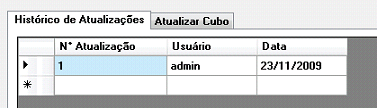

Tela utilizada para atualizar o cubo de vendas

Aba Histórico de Atualizações:
Exibe as datas de atualização do cubo e o usuário que o fez.
Em razão da não necessidade de atualização periódica, utilizando dados históricos, não é
recomendada uma atualização com prazo inferior a 10 dias.
Aba Atualizar Cubo:
Nessa guia, ao clicar no botão "Atualizar cubo", o usuário disparará um processo de atualização
do cubo, bem como das dimensões utilizadas no mesmo.